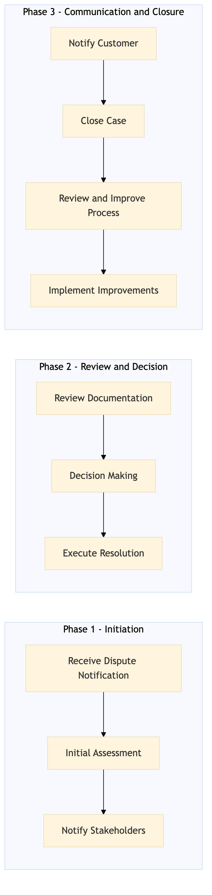

This process document outlines the steps for managing chargebacks and payment disputes within the OTA Customer Experience and Service domain, focusing on both Expedia Group's systems and Amex GBT / SAP Concur TMC systems.
| Trigger | A customer initiates a chargeback or reports a payment dispute through any of the supported channels (e.g., email, phone, online portal). |
| Outcome | The process ensures that all disputes are handled efficiently and fairly, resulting in either a resolution to the issue or a clear explanation of why no action can be taken. |
| Systems | Salesforce AWS SageMaker Snowflake Kafka SAP S/4HANA Amex Corporate Card SAP Concur Expense |

Click to enlarge
| Step | Name & Pain Point | Role | System | Input | Output | KPI | Flags |
|---|---|---|---|---|---|---|---|
| 1.1 | Receive Dispute Notification Delays in dispute notification | Customer Service Agent | Salesforce | Dispute report from customer | Case created in Salesforce | Response time within 2 hours | ⚠ Exception |
| 1.2 | Initial Assessment Complex disputes requiring deep analysis | Customer Service Agent | Salesforce, AWS SageMaker | Dispute case details | Assessment of dispute validity | Assessment completed within 4 hours | ◆ Decision |
| 1.3 | Notify Stakeholders Miscommunication between teams | Customer Service Agent | Salesforce, Email | Assessment results | Notifications sent to relevant parties (e.g., finance, legal) | Notifications sent within 1 hour | ⚠ Exception |
| 1.4 | Review Documentation Lack of comprehensive documentation | Finance Specialist | Snowflake, Kafka | Dispute case details and documentation | Documentation review completed | Review completed within 24 hours | ◆ Decision |
| 1.5 | Decision Making Inconsistent decision-making processes | Finance Specialist, Legal Advisor | Salesforce, SAP S/4HANA | Reviewed documentation and assessment | Decision on dispute resolution | Decision made within 2 business days | ◆ Decision⚠ Exception |
| 1.6 | Execute Resolution Technical issues with payment systems | Finance Specialist, Customer Service Agent | Salesforce, Amex Corporate Card, SAP Concur Expense | Decision and resolution plan | Resolution executed (e.g., refund, adjustment) | Resolution completed within 3 business days | ⚠ Exception |
| 1.7 | Notify Customer Poor communication with customers | Customer Service Agent | Salesforce, Email | Resolution details | Notification sent to customer | Notification sent within 1 hour of resolution | ⚠ Exception |
| 1.8 | Close Case Incomplete case documentation | Customer Service Agent | Salesforce | Resolution confirmation from customer | Case closed in Salesforce | Case closure within 24 hours of resolution confirmation | ⚠ Exception |
| 1.9 | Review and Improve Process Lack of process visibility | Process Analyst | Tableau, SAP Analytics Cloud | Dispute data and outcomes | Process improvements identified | Improvement suggestions within 1 week | ◆ Decision |
| 1.10 | Implement Improvements Resistance to change | IT Specialist, Process Analyst | AWS SageMaker, SAP S/4HANA | Process improvement suggestions | Improvements implemented in systems | Implementation completed within 2 weeks | ⚠ Exception |